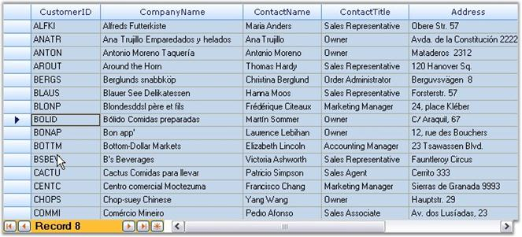
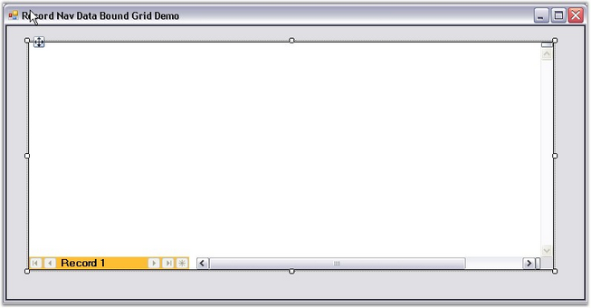
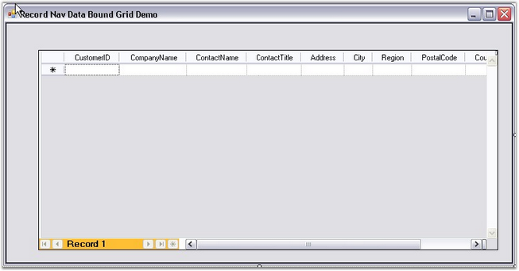

It is possible to display a Grid Data Bound Grid within a Grid Record Navigation control. This combination will give you a look similar to Microsoft Access.

Figure 221: Record Navigation
 Note: For more details, refer the following
browser sample:
Note: For more details, refer the following
browser sample:
<Install Location>\Syncfusion\EssentialStudio\[Version Number]\Windows\Grid.Windows\Samples\2.0\Data Bound\Record Navigation Data Bound Grid Demo
Example
The following sample displays a Grid Data Bound Grid within a Grid Record Navigation control. This sample was created using the designer.
Steps
1. Create an SqlDataAdapter and connect to the Customers table of the NorthWind database.
Note: A DataSet is generated.
2. Drag Grid Record Navigation control onto the form.

Figure 222: Grid Record Navigation Control dragged onto the Form
3. Drag Grid Data Bound Grid onto the Grid Record Navigation control.

Figure 223: Grid Data Bound Grid dragged onto the Grid Record Navigation Control
Note: Records can be displayed by typing in the
NavigationBar.
Figure 224: Records displayed in the Grid Data Bound Grid added to the Grid Record Navigation Control
A Grid Data Bound Grid is displayed within a Grid Record Navigation control.